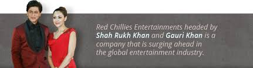

Red Chillies Entertainment (RCE) founded in 2002, is an Indian motion picture production, distribution and a premier visual effects company based in the city of Mumbai.
The company was founded in 2002 by Bollywood actor Shah Rukh Khan and his wife Gauri Khan. It was transformed from the now defunct Dreamz Unlimited.
Red Chillies Entertainment has formed a full-fledged film studio in India. The studio's activities span across creative development, production, marketing, distribution, licensing, merchandising and syndication of films in India and worldwide.
Apart from film production, RCE has a visual effects studio known as Red Chillies VFX. The company also has a 55% stake in the Indian Premier League cricket team Kolkata Knight Riders, Trinbago Knight Riders of Caribbean Premier League and Cape town Knight Riders of T20 Global League.
Sanjiv Chawla was the former CEO of the company, while Gauri Khan serves as a producer. In February 2013, Venky Mysore, the CEO of Kolkata Knight Riders took over additional responsibility as chief of Red Chillies Entertainment as well.

In 2004, choreographer Farah Khan, a good friend of Khan, decided to direct a film with him. He then took over the production company Dreamz Unlimited which he created with Juhi Chawla and director Aziz Mirza and transformed it into Red Chillies Entertainment with his wife Gauri Khan, who became the producer of the first production Main Hoon Na in which Khan starred as well.
The movie did well at the box office, becoming the second highest-grossing film of the year.
Khan also starred in the company's 2nd release, the 2005 movie Paheli, belonging to the genre of Indian Parallel Cinema, the film was critically acclaimed and was selected as India's official entry to the 78th Academy Awards in the Best Foreign Language Film category.
The third film produced by the company was Farah Khan's mega-budget Om Shanti Om, which was released in November 2007.
The film was set in the 1970s and 2000s and paid tribute to Indian film industry of both these eras.
Upon release, it broke many box office records, grossing over ₹ 1.48 billion and thus became the highest-grossing Hindi film of all-time at the time of its release. The 2009 film Billu starring Irrfan Khan and Lara Dutta was the company's next release, the film opened to good reviews, but was a failure at the box office. The film made by Roshan Abbas, Always Kabhi Kabhi, did poorly.
The company continued working on other projects until finally deciding on Ra.One (2011) starring Khan himself, Kareena Kapoor and Arjun Rampal. The pre-production work began in 2007 after the release of Om Shanti Om. The film's crew consisted of more than 5,000 members from India, Italy and the US, and was pieced together by more than 1,000 people, working in shifts, in around 15 studios across the world.
It saw the inclusion of several visual effects techniques being incorporated in the production which were carried out by Red Chillies VFX. With an estimated budget of ₹ 1.25 billion, Ra.One was the second-most expensive film ever produced in Indian cinema, and the most expensive Bollywood film.
The film witnessed a level of publicity campaigning previously unseen in India films, with marketing taking place over a period of nine months and involving major brand tie-ups of a 52 crore (US$9.88 million) which set the record for the largest marketing budget in India.
The film released across 3,100 screens in India and 904 prints overseas in both 2D and 3D, making it the largest Indian cinematic release in the world. Subsequently, the success of the effects and the 3D version of the film prompted multiple other Bollywood filmmakers to consider technology as a part of film-making, especially in view of the success of Ra.One and the inordinately higher returns generated from 3D ticket sales.
The film went on to break multiple box-office records and according to its distributors, is the second highest-grossing Bollywood film worldwide earning over ₹ 2.4 billion.
Their next production was Karan Johar's directorial venture, Student of the Year (2012), which was co-produced by Johar's production company.
Click for more ...